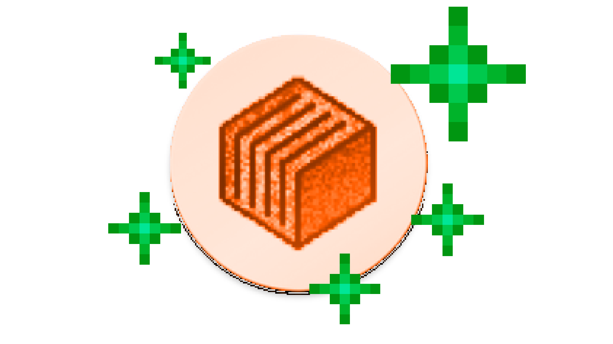
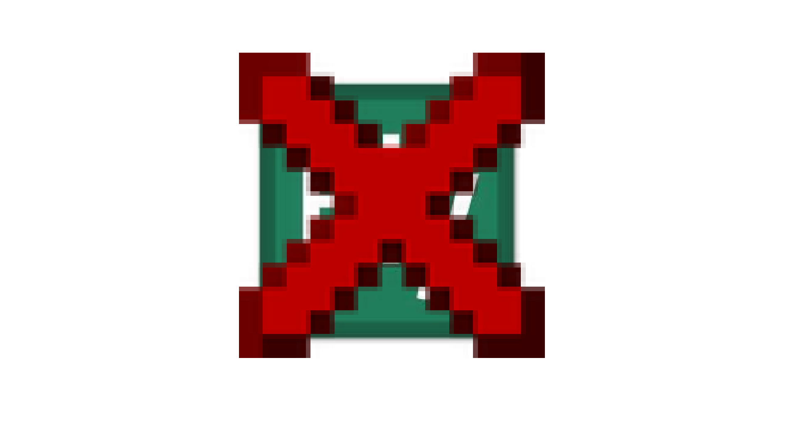

Check Out Latest Updates, News, Announcements & Sneak-Peaks About Copper!

Vacation Update!
Aug 5, 2026
Update 1.3.2
New Features:
Ability to add animated wallpaper to as a background (.mp4 & .gif).
26.3 Snapshot 4+ now runs prefectly.
LWJGL3ify will now run OOTB (when the GTNH devs fix their side). This is a bit weird as it will change the version of your instance, this is needed to get it to run.
Physical mouse back and forward buttons should now work (although depending on the mouse it can be broken, please open a bug report if your mouse side buttons are wrong).
Better loading bar when importing packs (work in progress).
Force closing now returns to the Launcher fragment instead of just closing the app (from MojoLauncher by @whitebelyash).
Changes:
SDL bumped to 3.4.12 (I don't know if we had gyro on controllers before but we definitely do now!).
Stop forcibly setting people's default controls to the new one.
Gave manage & browse content fragment a new look!
Fixes:
Fix hotbar taps sometimes not registering if you swap slots using other methods (kb/controllayout) #37.
Some devices not being able to update because we changed the version string???
Recompressed modpack zips taking forever to import.
Known Issues:
MobileGlues and Krypton Wrapper will crash on 26.3-snapshot 4 & above due to changes in how SDL creates EGL window.
Krypton Wrapper does not work on 26.3-snapshot 3 & above.
MobileGlues will crash on 26.3-snapshot 3 & above if error filtering is set to "Don't Ignore".

No Ely.by
Aug 4, 2026
Announcement
Just wanted to make some things clear; we will not be adding ely.by support & Freedreno renderer to Copper. Hence, please don't make suggestions about them. Instead of Freedreno, we will add MobileGL or MobileGL (Vulkan).